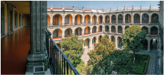
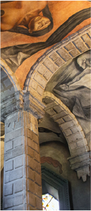

SAN ILDEFONSO

El Antiguo Colegio de San Ildefonso es un edificio histórico fundado en 1588 por la orden de los jesuitas durante la época virreinal en la Ciudad de México. Originalmente funcionaba como una institución educativa religiosa, donde se formaban jóvenes en teología, filosofía y artes. Tras la expulsión de los jesuitas en el siglo XVIII, el edificio tuvo varios usos hasta que en el siglo XIX se convirtió en sede de la Escuela Nacional Preparatoria, una de las instituciones educativas más importantes del país.
A inicios del siglo XX, este lugar se volvió clave para el desarrollo del arte mexicano, ya que fue aquí donde surgió el movimiento del muralismo mexicano, con artistas como:
Arquitectura
El edificio es un ejemplo destacado de arquitectura colonial con elementos barrocos.
Tiene:
Patios amplios con arcos Fachadas de cantera
Detalles decorativos religiosos y académicos
Su construcción se fue ampliando en diferentes etapas, por lo que mezcla estilos de distintas épocas.
